AKTUELL

Regatta
2025
Zehn Vereine treffen sich zum Salzgitter-Opti Cup 2025
Eine tolle Segelveranstaltung bot sich für die jungen 18 Opti-Segler und Seglerinnen zum diesjährigen Salzgitter Opti-Cup. Unser Jugendwart Andre Richter und viele Helfer konnten neben den jungen Aktiven des Segel-Club Salzgitter weitere 9 Vereine aus der Umgebung, aber auch aus weiteren Teilen Norddeutschlands auf dem Vereinsgelände begrüßen. Das gab es die letzten zehn Jahre nicht mehr.
Das Wetter meinte es auch gut mit den neun jungen weiblichen und männlichen Optimisten. Bereits am Samstag konnte Steffen Stein, kürzlich erst als Nachfolger von Kay Ebel zum neuen Sportwartwart des SCSz gewählt, in Funktion als Wettfahrtleiter das Feld auf vier Wettfahrten schicken. Fast schon uneinholbar vorne lag nach Tag eins Marline Stindl vom WSC Gifhorn (WSC) mit vier Tagessiegen und somit Idealpunktzahl 4. Ihr folgte Paula Heimes aus Vegesack (VWV) und Janosch Peppel vom Segler-Verein Braunschweig (SVBS). Dieses Ergebnis hatte auch nach zwei weiteren Wettfahrten und einem Streichergebnis am Sonntag Bestand. Marline sicherte sich zwei weitere Erfolge. Somit musste ein erster Platz sogar für das Endergebnis mit 5 Gesamtpunkten gestrichen werden. Paula sicherte sich mit 14 Punkten Platz 2und 16 Punkte standen für den Dritten Janosch in der Ergebnisliste.
Beste der drei teilnehmenden Salzgitteranerinnen wurde Anna Uhde auf Platz 11 mit 56 Punkten. Mit Platz 7 gelang Anna ein schöner Erfolg gleich in der ersten Wettfahrt. Auf Gesamtplatz 16 kam Tessa Bäuerle mit 67 Punkten, dabei gelang ihr zweimal der Zieleinlauf auf Platz 12. Für die erstmals bei einer Regatta segelnde Mariam Idem stehen sämtliche 6 durchgehaltene Wettfahrten im Endergebnis. Nach drei ersten Wettfahrten im Einlauf auf 18 sind die Steigerung, dieses den Wettfahrten 4 bis 6 verhindert zu haben, schon als ein kleiner Erfolg mit in die nächsten Regatten zu nehmen.
Die besten Ergebnisse der weiteren am Opti-Cup teilnehmenden Vereine lauten:
Felix van Kempen aus Wulsdorf bei Bremerhaven (WVW) auf Platz 4 mit 20 Punkten,
Lennard Plugowsky aus Aumund bei Bremen (WSVA) auf Platz 5 mit 21 Punkten,
Paula Frieda Weise aus Altwarmbüchen (WSV-AWB) auf Platz 7 mit 38 Punkten,
Svea Garbrecht aus Hemelingen bei Bremen (WVH) auf Platz 8 mit 39 Punkten,
Kalle Wenzel aus Braunschweig (NFBS-W) auf Platz 14 mit 62 Punkten und
Janna Baars vom Steinhuder Meer (SVG) auf Platz 17 mit 68 Punkten.
Ein Dank an die vielen ehrenamtlichen Helfer im Verein, der Wettfahrtleitung auf dem Startschiff und der auf dem See für die Sicherheit zuständige DLRG, ohne die solch eine Veranstaltung auf und am Wasser nicht möglich wäre.
|
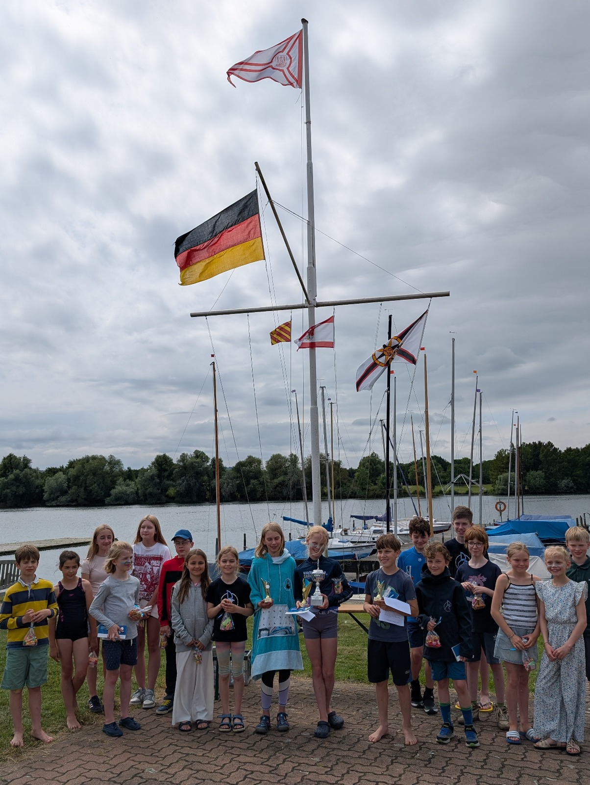
|
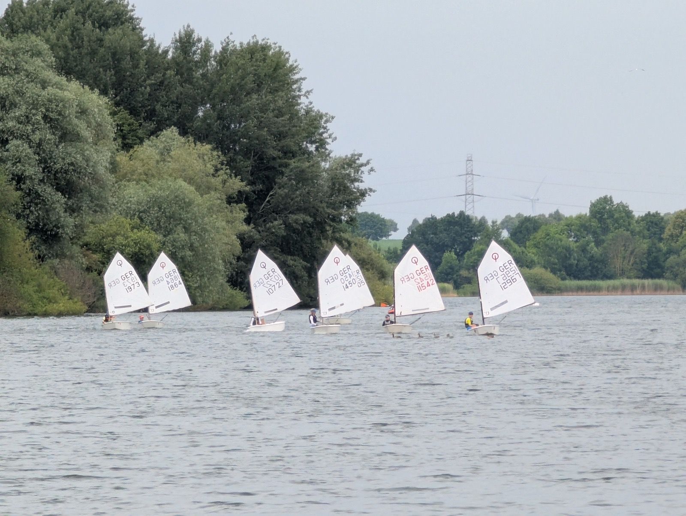
|
Optiregatta
2025
Wolfsburger Yachtclub Allertal
Am 24. und 25.05.2025 fand unsere jährliche Opti Ranglisten Regatta am Allersee in Wolfsburg statt. Es hatten sich 8 Segler aus 4 Vereinen gemeldet. Die Segler aus Altwarmbüchen kamen als Team mit ihren 3 Trainern. Sie blieben auch über Nacht zusammen und machten es sich in unserem Vereinsheim gemütlich.
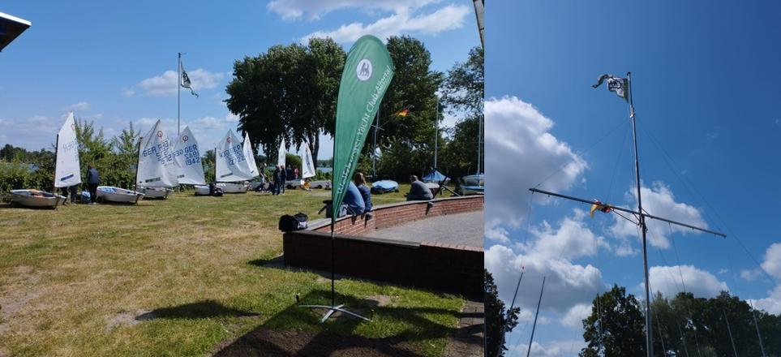
Der erste Start erfolgte, wie in der Ausschreibung genannt, pünktlich um 12.55 Uhr. Es waren tolle Bedingungen mit 3 Windstärken aus WSW, 22°C Lufttemperatur und 16°C Wassertemperatur.
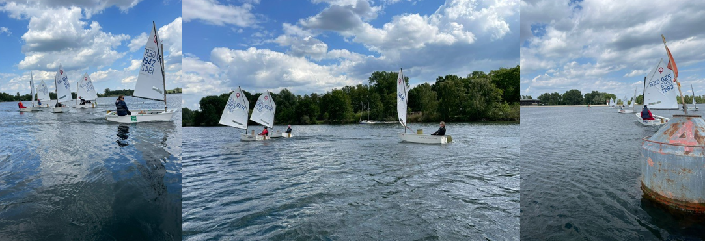
Einen Frühstart gab es, aber der junge Segler zeigte dass er die Regelkunde beherrscht und entlastete sich mit einem Kringel. Es wurden 3 Läufe sehr gut gesegelt und daraufhin entschloss sich die Wettfahrtleitung auch für den 4. Lauf. Um 17.00 Uhr hatten es die Opti Segler dann geschafft. Tolle Leistung ! Danach kam die Elternregatta. 4 Trainer und 1 Vater gingen auf die Optis und zeigten ihr Können beim Start und beim Segeln. 1 Kenterung gab es dabei, die der Freude keinen Abbruch gab.
17.45 Uhr: endlich Essen und Feierabend !
Am Sonntag trafen wir uns alle um 9.00 Uhr wieder, da der erste Start um 11.30 Uhr geplant war.
Leider musste die Startverschiebung gesetzt werden. Es regnete, was die Kinder nicht störte, aber es gab keinen Wind. 1 Kind konnte direkt nicht antreten da es über Nacht Fieber bekommen hatte und ein zweites musste etwas später abbrechen auch aus gesundheitlichen Gründen.
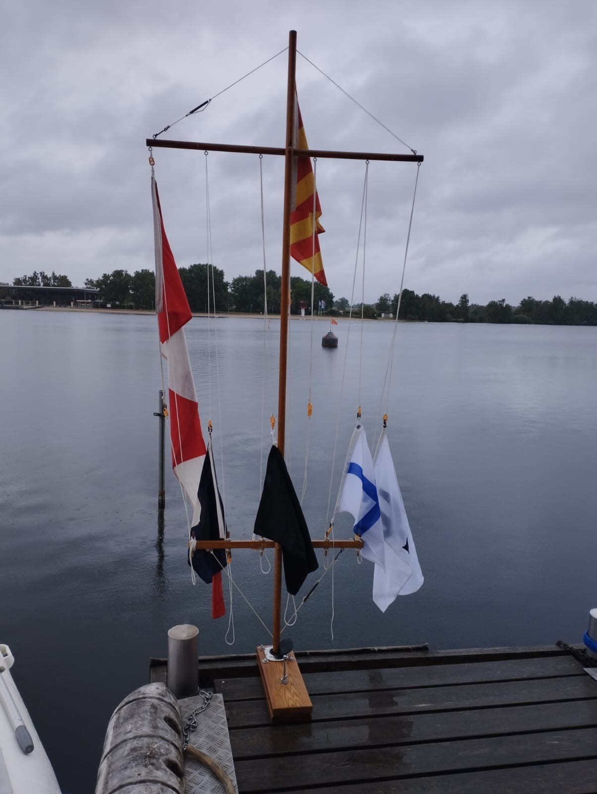
So starteten 6 Optimisten um 12.45 Uhr bei 2 Windstärken aus SW für den letzten 5. Lauf. Während die Boote abgebaut, die Wettfahrtleitung die Auswertung machte, gab es Essen. Pommes, Würstchen,
Brötchen, Nudeln und Tomatensoße, rote Grütze sozusagen alles was das Herz begehrt. ;) Um 14.30
Uhr war die Siegerehrung mit stolzen kleinen Seglern. Für den jüngsten Segler gab es einen Pokal, der für Überraschung und Stolz bei den Eltern sorgte.
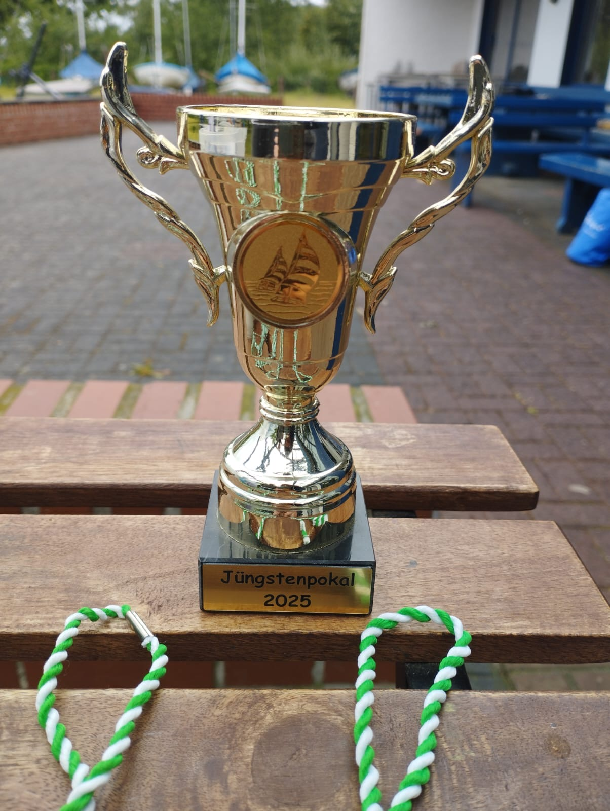
Es war rundherum ein schönes und fröhliches Wochenende mit schönen, fairen Segeln. Ich wünsche
allen Seglern viel Erfolg und immer eine Handbreit Wasser unterm Kiel!
Jugendwartin Sabine Jürgens
Regatta
23. Oktober 2024
Oberbürgermeisterpokal in Braunschweig am Südsee – Lennart Loch berichtet
Bei der Opti-B Regatta Oberbürgermeisterpokal von den Naturfreunden Braunschweig auf dem Südsee belegte Lennart Loch den dritten Platz und schrieb uns seine Eindrücke:
Am ersten Tag war es sehr windig. Allerdings war der Wind sehr böig. Die Wettfahrten waren trotzdem sehr schön und haben Spaß gemacht. Die Wettfahrtleitung war gerecht und hat einen guten Kurs gelegt. Am zweiten Tag hatten wir leider weniger Wind. Trotzdem war die Wettfahrt toll, wir haben immer wieder am Begleitboot angelegt und hatten viel Spaß! Insgesamt hat mir die Regatta sehr gut gefallen und ich hoffe, dass ist diese Regatta noch sehr lange gibt. Das Essen war total lecker. Es gab Spaghetti und Wackelpudding:)
Von Lennart Loch
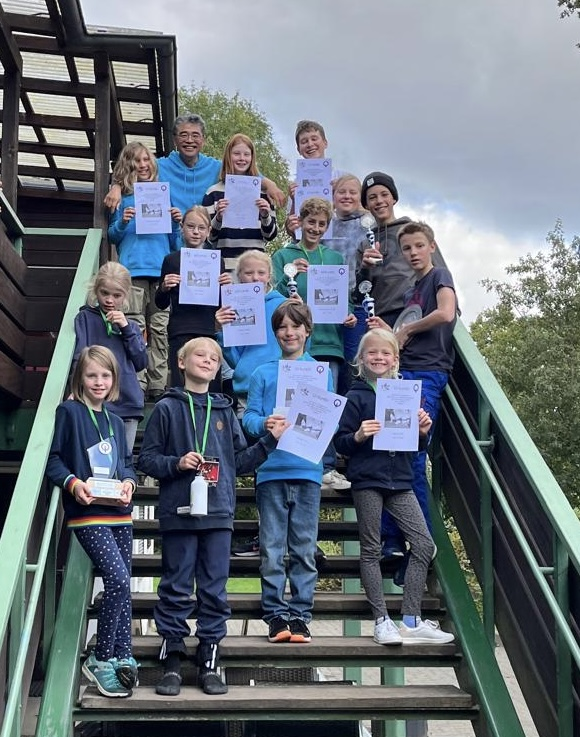
Ein wilder Mix zum Saisonstart an der Innersten Talsperre
Verschiedenste Einhandboote (alle Laser ähnlich), Segler und Seglerinnen im Alter von 12 – 64 und erst schwacher Wind der sich dann noch ordentlich steigerte. Das Leistungsniveau – ebenfalls komplett unterschiedlich. Unser Trainer Toshi im RVSSN wagte den Spagat. Neben den vielen theoretischen Einheiten ging es auch genauso auch aufs Wasser. Bei den vielen Tonnenrundungen gellte immer wieder das Wort „und Pump“ durch das Tal, welches das anpumpen und aufrichten des Bootes zum richtigen Zeitpunkt signalisieren sollte. Bei dem leckeren Mittagessen wurden zur großen Pause die Erfahrungen untereinander ausgetauscht. Auch wenn es hier und da ein paar Materialschwächen gab, waren die Teilnehmer durchweg sehr zufrieden mit der Lokation, dem Essen und vor allem aber mit ihren eigenen erbrachten Leistungen. Einen großen Dank an Toshi, Heike und Chrissi, die die Hauptakteure bei dem ganzen geschehen waren.
|
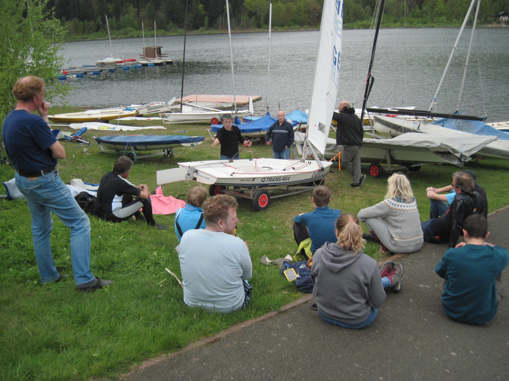
|
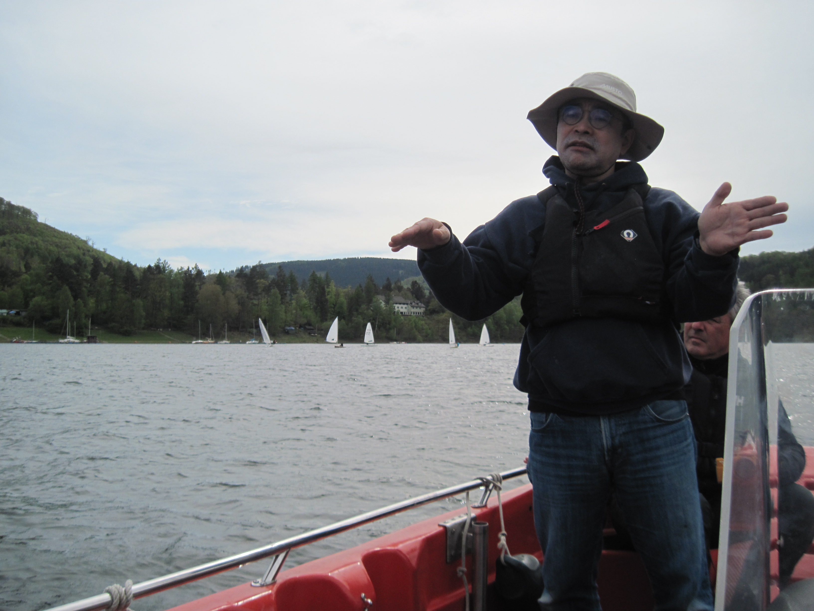
|
|
|
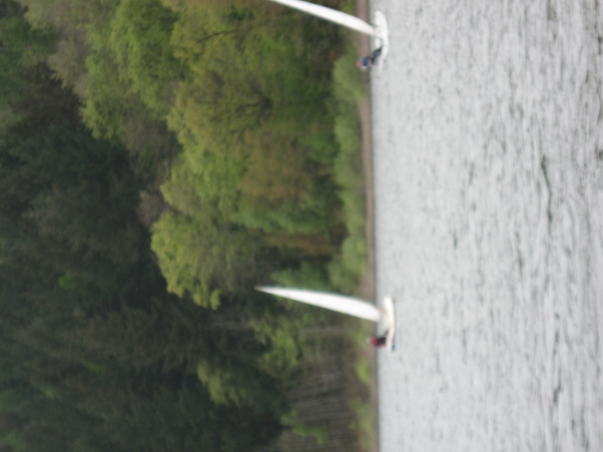
|
Optimistenregatta
erste Juniwochenende
WYCA-Opti-Cup auf dem Allersee
Am ersten Juniwochenende fand die diesjährige Optimistenregatta, der WYCA-Opti-Cup, auf dem Allersee statt.
Wie in den Vorjahren war die Regatta als Opti B Ranglistenregatta ausgeschrieben. Die Wettfahrtleitung übernahmen Mario und Hilmar, die sogar auf ihr Vortraining zur Deutschen Meisterschaft der Conger am Dümmer verzichtetet hatten und die Conger-Vermessung „so nebenbei erledigten“ -Respekt und vielen Dank dafür!
Vielen Dank auch an alle Unterstützer, die sich bereits im Vorfeld und am Wochenende um die Erfordernisse einer Regatta kümmerten: Getränke, Grillgut und Benzin einkaufen, Salate und Kuchen vorbereiten, Manage2Sail füttern, Pram, Bojen und Flaggen, Regattaleitung, Aufbauen, Aufräumen, Preise, usw.
Der Samstag startete mit einem kleinen Schreck. Der Pramschlüssel war verschollen, aber gut, dass es Mitglieder mit Einbrecherqualitäten gibt ;).
16 Segler reisten pünktlich mit elterlicher (und Toshis) Unterstützung an, sogar Segler von der Bigge, dem Dümmer und ZSK waren vertreten. Bei der Abfrage wurde schnell klar, dieses Jahr waren im Gegensatz zum Vorjahr keine Regattaeinsteiger am Start.
Das Wetter spielte entgegen zwischenzeitlicher Voraussagen grandios mit, so dass bereits am Sonnabend 4 spannende und faire Läufe bei recht konstanten 4 Bft. und Sonne gesegelt werden konnten. Im Anschluss war sogar noch Zeit für die Eltern-/ Trainer-/ Geschwisterregatta, bevor der Regattatag mit Bratwurst, Steak und Salaten ausklang.
Am Sonntag endete die Regatta mit einem finalen 5. Lauf.
Lukas vom Yacht-Club-Lister am Biggesee gewann mit 4 ersten Plätzen die Regatta, herzlichen Glückwunsch. Die weite Anreise hatte sich somit gelohnt. Platz 2 ersegelte sich Thore von den Naturfreunden Braunschweig, den 3. Platz erreichte Valérie vom Zwischenahner Segelclub. Sie erhielt dann auch den Pinguin und darf somit den Bericht für die DODV schreiben.
Die 3 WYCA Segler Jan, Yannik und Tomek segelten ein letztes Mal die Optiregatta „just 4 fun“ mit. Sie sind „aus dem Opti gewachsen“ und werden nun 420er und ILCA segeln.
Mal schauen, ob in dieser Saison noch Optikinder den Weg in die Vereine der Region finden, die Lust aufs Segeln haben. Es wäre schön, wenn auch nächstes Jahr ausreichend Meldungen in Opti B für Regatten zusammenkommen.
|
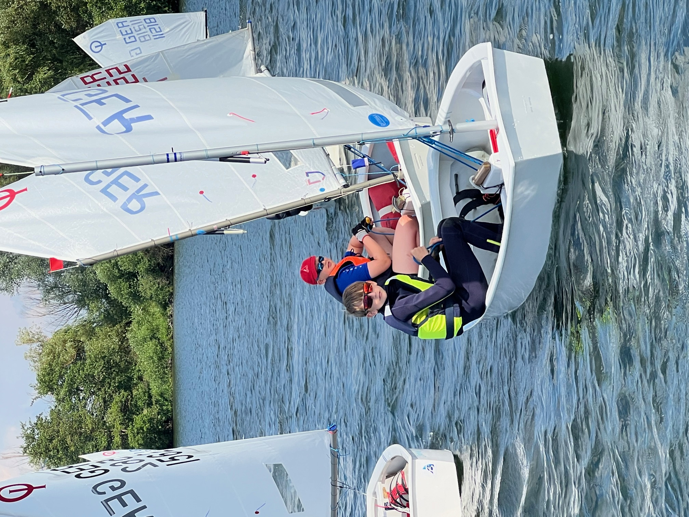
|
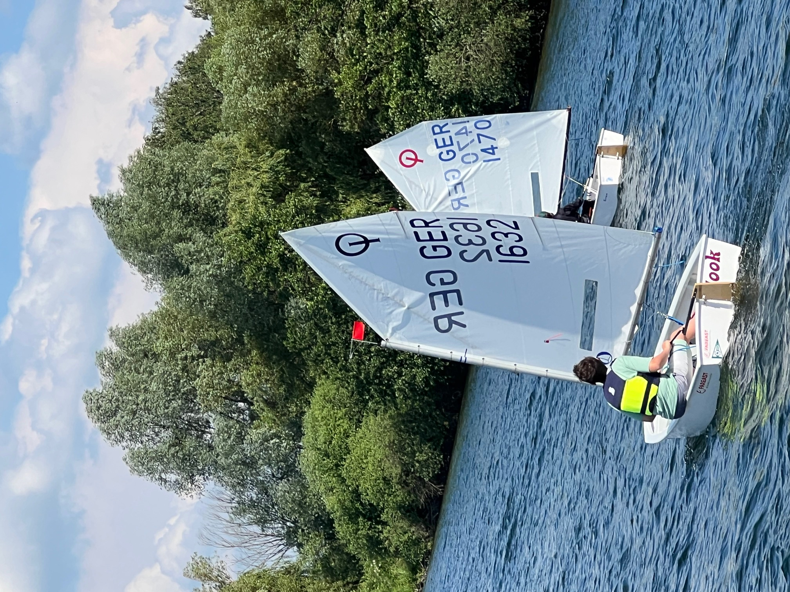
|
|
|
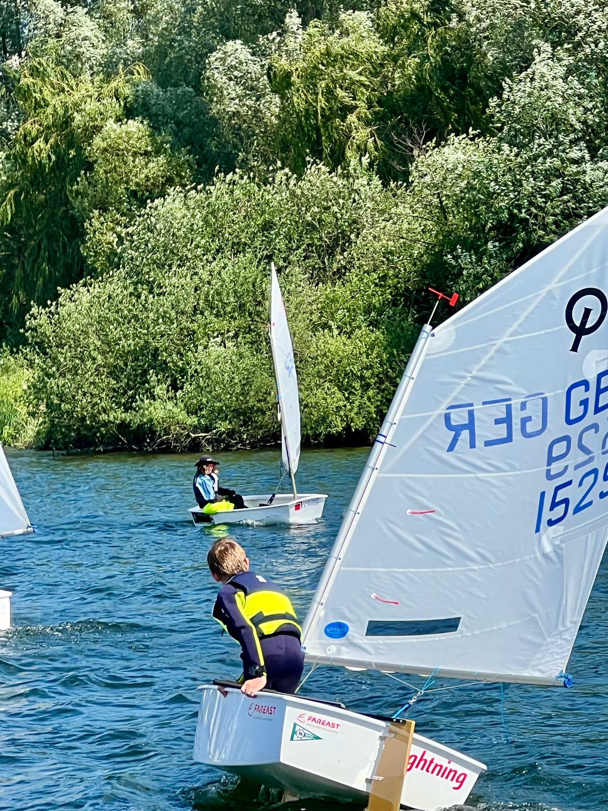
|
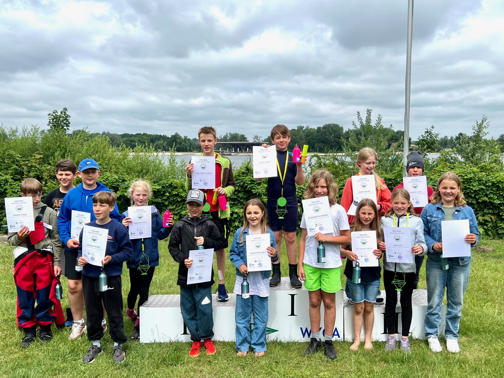
|


 Segler-Vereinigung Seeburger See e.V.
Segler-Vereinigung Seeburger See e.V.
 Segler-Verein Braunschweig e. V.
Segler-Verein Braunschweig e. V.